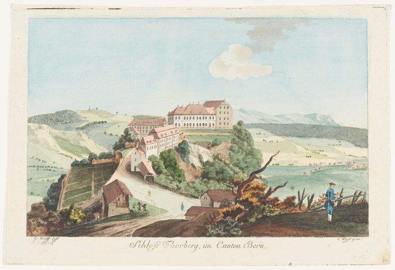

Über das Projekt
Forschungsziel, Überlieferung und Geschichte der Kartause Thorberg.
Projektbeschreibung
Digitale Bibliothek Thorberg
Stefan Matter
In der UB Bern liegen über 70 Bände aus der 1528 im Zug der Reformation aufgelösten Kartause Thorberg. Viele dieser Bücher haben noch ihre mittelalterlichen Einbände mit Signaturen und Tituli. Diese sind entweder direkt auf den Buchrücken geschrieben oder auf Zettel, die auf den Rücken geklebt wurden. Alle Bücher haben in der Thorberger Bibliothek einen Besitzereintrag erhalten, stets auf dem vorderen sogenannten Spiegelblatt, auf der Innenseite des vorderen Buchdeckels also. Teilweise finden sich auch jüngere Signaturen an dieser Stelle.
Die vorliegende Seite stellt einen Versuch dar, die heute noch vorhandenen Bücher der ehemaligen Bibliothek der Kartause Thorberg zu sammeln und zugänglich zu machen. Sie erlauben vielfältige Einblicke in die turbulente Zeit der Einführung der Reformation in Bern und der Gründung der Vorgängerinstitution der heutigen Universität und ihrer Bibliothek.
Die Kartause Thorberg
Im Jahr 1397 gründete Peter von Thorberg aus einem grossen Teil seiner Besitzungen, die er bereits über ein Vierteljahrhundert zuvor von Kaiser Karl IV. offenbar zu diesem Zweck als Eigentum übertragen bekommen hatte, eine Kartause. Nachdem Bern 1528 die Reformation eingeführt hatte, wurde die Kartause noch im selben Jahr aufgehoben. Die meisten Patres zogen in noch bestende Kartausen – so etwa nach Ittingen – und nahmen dabei teilweise grössere Mengen Bücher mit. Wie lange die restlichen Bücher in Thorberg blieben, bevor sie nach Bern kamen, wissen wir nicht genau. Ebenso wenig wissen wir, wie genau mit den liturgischen Büchern verfahren worden ist, sie sind uns komplett verloren.
Diese Gesamtansicht von Osten nach einer Zeichnung von Caspar Wolf von um 1774–1779 zeigt Thorberg in einem Zustand, der noch weitgehend jenem bei der Auflösung des Klosters 1528 entspricht.
